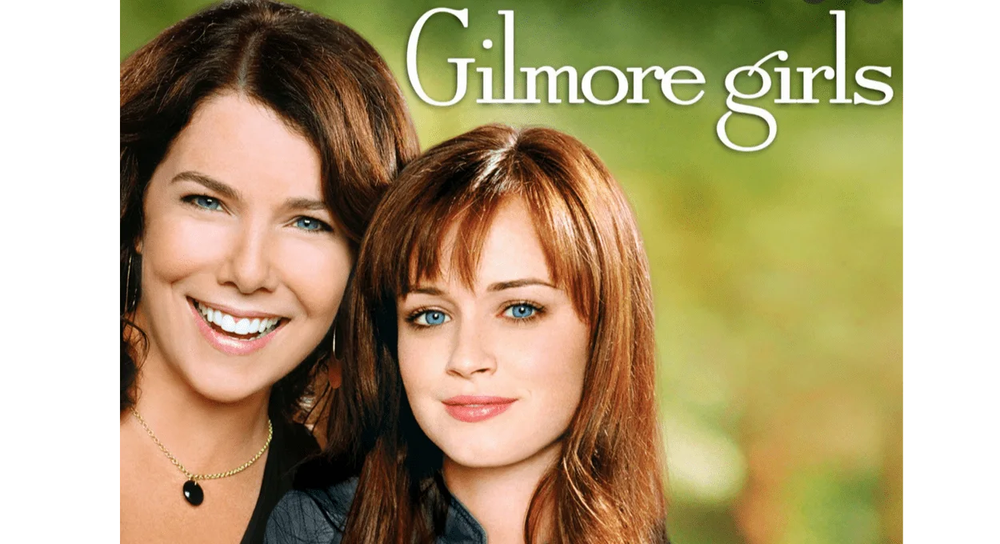

My favorite show of all time would have to be Gilmore Girls. Gilmore Girls is a drama television series that follows the lives of a mother-daughter duo, Lorelai and Rory Gilmore, as they navigate their lives in the quaint town of Stars Hollow, Connecticut. The show explores themes of family, love, friendship, and ambition, and is famously known for its witty dialogue and pop culture references.A longer synopsis of the show can be found here!
Additonally, my favorite scene from the show is from the episode Friday Night's Alright for Fighting. 